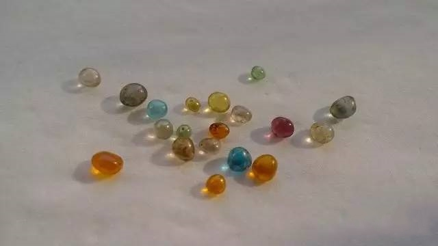

这位高僧一生历经五帝四朝，主法十五道场，中兴六大祖庭，兼承五宗禅门，被誉为“中国近代禅宗泰斗”，世寿一百一十九岁，戒腊一百年，他就是极富传奇色彩的虚云老和尚。

一、高僧降世呈异象
虚云法师之父年逾四十无子，他的夫人颜氏在永春州的观音寺祈子后，夫妇二人夜间同梦一长须着青袍者，头顶观音跨虎而来，跃卧榻上，二人惊起互告，颜氏遂有娠。
云和尚的《自述年谱》上说，他初生下来时是一个肉团，母亲颜氏骇恸，气壅而死，第二天有卖药翁来，剖开肉团，得一男婴，就是后来的虚云和尚。
宣化上人：好像世间异人，有的一生出来，就是一个肉团，就好像虚老（虚云老和尚），生出来就是一个圆球，这就叫穿着衣服来的，这是八地以上菩萨的境界，八地以前的菩萨来没有这种情形。
二、佳人共室身不乱
虚云禅师自幼即厌荤食，性喜恬淡。自幼萌发弃世出俗之愿。十六岁，曾只身欲往南岳衡山出家，行至半道被截回。后来又被父亲强徙至福州，并为之娶回田、谭二氏，强禁锢同居于一室，虚云却居内而无染。
三、避父隐洞又三年
久之，出尘之志益坚。到清咸丰八年（1858），赋《皮袋歌》留别田、谭二氏，偕从弟潜至鼓山涌泉寺，投常渊开坐下出家，取法名古严，又名演澈，法号德清，即虔心奉佛，诵读经书，习学仪规。次年，依妙莲受具足戒。其后，为避父亲追寻，隐居于山后岩洞，长达三年。

四、遍游名山访古刹
他初渡海到普陀山，遍参各寺刹；足迹遍布江南各大名寺。到了一八八二年，他二度朝礼普陀，为报亲恩，再礼五台。是年七月一日，自普陀法华庵起香，三步一拜，一直拜到五台山。他一个人礼拜前进，经南京渡江到浦口，在狮子山寺挂单过年。过了春节，再由狮子山寺起香，经苏北入河南，经嵩山少林寺、洛阳白马寺，到了腊月，拜到黄河边的铁谢渡。
渡过黄河，在路边一个茅棚中度夜。后半夜大雪纷飞，黎明后积雪盈尺，过往无人，他在茅棚中枯坐念佛，饥寒交迫，到了第六日终至陷入昏迷状态。后来得一乞丐相救，得继续前进，拜到豫北洪福寺。正月初二再起香前进，拜到五月底终于拜到五台山的显通寺。自光绪八年七月由南普陀起香，到十年五月到显通寺，途中足足跪拜了二十三个月，这种毅力，实不是常人所能及！
五、灭世熄波获殊荣
为重修寺宇，他只身往南洋募化。途中在南甸太平寺，在仰光、槟榔屿，在麻六甲青云亭，在吉隆坡灵山寺停留。各地均有弟子皈依，前后万余人。这时接到云南全体僧众来电，谓政府要征提寺产，于是在1906年回国。后来直入北京，庚子年在京中相识的一些王公大臣也都来研究如何给皇帝上奏章。由于诸护法的相助，光绪帝下了一道上谕，谕知地方官不得勒捐寺产，风波始告一段落。
虚云以清朝开国以来，对云南一地没有颁发过《大藏经》，商请诸位护法奏请朝廷，给云南颁发一部《龙藏》。此事由肃亲王发起上奏，光绪三十二年（一九〇六年）七月奉到上谕，把鸡足山的钵盂寺改名护国祝圣禅寺，钦赐《龙藏》一部，銮驾全副护送《龙藏》到山，赐虚云和尚紫衣、玉印，并赐封号为“佛慈洪法大师”。

六、海外传教引轰动
光绪末年那一段时间，虚云到南洋弘化，并为祝圣寺募款。他在暹罗龙泉寺讲经时，一日趺坐入定，一定九日，这一来轰动了暹京，自国王大臣至善男信女咸来罗拜，国王请他到宫中讲经，百般供养，官民皈依者数千人。这一次南洋弘化两年余，直到宣统元年（一九〇九年）始由仰光回云南。
七、指点迷津唐生智
1921年秋，滇军将领顾品珍图谋推倒唐继尧，夺取云南军政大权。唐继尧得知情报后，决心以心腹劲旅二十余团与顾品珍决一死战，但心中没有把握。于是，他连夜赶到虚云老和尚所住寺庙，焦急地把云南情形倾倒给老和尚，请老和尚指点决策大计。
唐继尧急不可耐，但老和尚神色自若，自语：“公得滇民心，未尽得将士心，倘事兵戈，恐成两败，而他种势力将至滇矣，不如因势利导去虚名而存实力，以俟异日之缘”。然后，留下布袋和尚的《插秧》偈“手把青秧插满田，低头便见水中天，心地清净方为道，退步原来是向前”，便不再言语。
后来唐让位于顾品珍，于大年三十晚上带着家人亲信，秘密从越南转往香港暂住。一切自有安排，德不配位，祸必相随。不出老和尚所料，顾品珍上任后，2月间昆明大雨滂沱，7月干旱数月，12月喉疫爆发，近万人病死。顾品珍自顾不暇，更不用说体恤百姓士卒;自将领至士民无不思念唐继尧恩德，最后议定迎唐继尧回任。闻此消息，顾品珍饮弹自尽。

八、云门事件遇劫难
公元一九五一年春，虚云和尚一百一十二岁，全寺僧人一百二十余人，均遭毒打残害，甚至有致死者，云老和尚以一百一十二岁高龄，受此等酷刑，死而复生，入定神游兜率天，足见其禅悟境界之高深。云门事变后，虚云曾撰一联，以抒感想：
坐阅五帝四朝，不觉沧桑几度。
受尽九磨十难，了知世事无常。
九、开辟佛教新时代
1949年，应邀赴北京参加佛教协会筹备会议，在广济寺与圆瑛法师、赵朴初等成立中国佛教协会筹备处。10月，他代表中国佛教徒接受锡兰佛教代表团赠送的“佛舍利”、“贝叶经”、“菩提树”三宝。1952年参与发起中国佛教协会，被推为首席发起人。1953年被推为中国佛教协会名誉会长。

十、功成归隐云居山
1953年114岁的虚云老和尚，谢绝了中央政府到北京安度晚年的邀请，也谢绝了庐山大林寺，南华禅寺等各大名刹的邀请，在佛源、觉民等禅师的陪同下，步行到达云居山，当目睹昔日禅风远播的佛教圣地，仅剩下三间茅草屋，佛像也被掩盖在荒草丛中时，发大愿要重修祖师道场，并在这里度过了自己人生中最后的时光。

十一、圆寂舍利化五彩
1959年虚云圆寂于云居山。师圆寂之后，四众弟子万分悲痛，先后在江西云居山、香港芙蓉山、云南昆明市等处为其建立舍利塔。虚云禅师舍利以宝石舍利和水晶舍利最出名。宝石舍利成方形多为绿色、蓝色。水晶舍利成圆形多为无色透明和浅黄色。
十二、一身兼承禅门5宗
虚云一生，志大气刚，悲深行苦，解行并进，严净毗尼，行头陀行，弘法演教，建树卓着。除述及的传承曹洞、临济法脉外，还应湖南宝生等之请，续沩山法第，进承兴阳禅师之法，为沩仰宗第八世祖。应福建八宝山青持之请，衍法眼源流，继良广之后为法眼第八世祖。中兴云门时，遥承已庵深净禅师之法，为云门宗第十二世祖。这样，师以一身而参五宗法脉慧日重光，禅风再振。现代旅居美国的宣化上人，即是虚云授予的沩仰宗第九代传人，他秉承门师虚云教诲，弘扬佛法于天下，创建美国万佛圣城，业绩辉煌。虚云在整理、保护经典文献方面，也多有建成树。曾完成《楞严经玄要》、《法华经略疏》、《遗教经注译》等十余种着述。一生之中，讲经说法次数无法计数。仅由岑学吕宽贤与净慧先后编辑的《虚云和尚法汇》、《虚云和尚法汇续编》就多达百余万字。正如中国佛教协会前会长赵朴初所赞颂的：遍立道场而无所住，广演法要而无所述。人我寿者无所得，故慧灯再燃亦无所续。
虚云大师一生，一衲、一杖、一笠、一钟行遍天下。

《虚云赞》
滚滚红尘一盏灯，茫茫人海一禅僧；
千载难逢一泰斗，万事随缘一本经；
四朝五帝一程路，九磨十难一柱擎；
百年虚云一台戏，一声钟鼓一片情。
《辞世诗》
少小离尘别故乡，天涯云水路茫茫。
百年岁月垂垂老，几度沧桑得得忘。
但教群迷登觉岸，敢辞微命入炉汤。
众生无尽愿无尽，水月光中又一场！